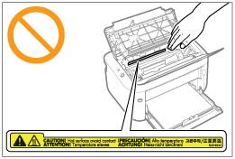

|
|
|
|---|
|
VAROITUS
|
|
Kun puhdistat tulostinta, kytke tulostin ja tietokone POIS päältä, irrota liitäntäkaapelit ja irrota virtapistoke pistorasiasta. Muuten seurauksena voi olla tulipalo tai sähköisku.
Irrota virtapistoke pistorasiasta aika ajoin ja puhdista kuivalla kankaalla virtapistokkeen metallikärkien juuria ympäröivä osa sekä pistorasia pölystä ja liasta. Kosteassa, pölyisessä tai savuisessa paikassa virtapistokkeen ympärille voi kertyä pölyä, joka voi kostua.Tästä voi seurata oikosulku, joka voi aiheuttaa tulipalon.
Puhdista tulostin kuivaksi puristetulla kankaalla, jota on kostutettu vedellä tai veteen laimennetulla miedolla pesuaineella. Älä käytä alkoholia, bentseeniä, maalinohennetta tai muita helposti syttyviä aineita. Jos tulenarkoja aineita pääsee kosketuksiin tulostimen sisällä olevien sähköosien kanssa, seurauksena voi olla tulipalo tai sähköisku.
Joissakin tulostimen sisäisissä alueissa on suurjännite. Kun poistat paperitukosta tai tarkastat tulostimen sisäpuolta, älä anna kaulakorujen, rannekorujen tai muiden metalliesineiden koskettaa tulostimen sisäpuolta, koska tämä voi aiheuttaa palovamman tai sähköiskun.
Älä hävitä käytettyjä värikasetteja avotulessa. Kaseteissa jäljellä oleva väriaine voi syttyä, mistä voi aiheutua palovamma tai tulipalo.
Vahvista, että virtajohto tai pistoke on työnnetty perille asti tulostimen puhdistamisen jälkeen. Muuten seurauksena voi olla ylikuumeneminen ja tulipalo.
Tarkasta virtajohto ja pistoke säännöllisesti. Seuraavissa tapauksissa seurauksena voi olla tulipalo, joten ota yhteyttä paikalliseen valtuutettuun Canon-jälleenmyyjään tai Canonin puhelinpalveluun.
Virtapistokkeessa on palamisläikkiä.
Virtapistokkeen piikki on vääntynyt tai murtunut.
Virta kytketään POIS tai PÄÄLLE, kun virtajohtoa taivutetaan.
Virtajohdon eriste on vaurioitunut, haljennut tai taipunut.
Kohta virtajohdosta kuumenee.
Tarkasta säännöllisesti, ettei virtajohtoa tai pistoketta käsitellä seuraavasti. Muuten seurauksena voi olla tulipalo tai sähköisku.
Pistoke jätetään löysälle.
Virtajohtoon kohdistuu painavasta esineestä tai niittaamalla kiinnittämisestä johtuvaa rasitusta.
Laitteen puoleinen pistoke jätetään löysälle.
Virtajohto sidotaan nippuun.
Osa virtajohdosta kulkee kävelytienä käytettävällä käytävällä.
Virtajohto on lämmityslaitteen edessä.
|
|
HUOMIO
|
|
Älä koskaan yritä huoltaa tulostinta itse muuten kuin tässä oppaassa neuvotaan. Tulostimen sisällä ei ole osia, joita käyttäjä voi huoltaa. Säädä ainoastaan käyttöohjeissa kuvattuja asetuksia ja toimintoja. Epäasianmukainen säätäminen saattaa aiheuttaa sellaisia henkilövahinkoja tai mittavia korjauksia vaativia vahinkoja, jotka eivät välttämättä kuulu rajoitetun takuun korvauspiiriin.
 Tulostimen sisällä oleva kiinnitysyksikkö ja sen ympäristö kuumenevat käytön aikana. Kun poistat paperitukosta tai tarkastat tulostimen sisäpuolta, älä koske kiinnitysyksikköön ja sen ympäristöön, koska tämä voi aiheuttaa palovamman.
Kun poistat paperitukosta tai tarkastat tulostimen sisäpuolta, älä altistu kiinnitysyksikön ja sen ympäristön säteilemälle lämmölle pitkäksi aikaa. Seurauksena voi olla matalan lämpötilan palovammoja, vaikka et koskenut kiinnitysyksikköä tai sen ympäristöä suoraan.
Jos paperi juuttuu, poista juuttunut paperi näytetyn ilmoituksen mukaisesti niin ettei tulostimen sisään jää paperinpaloja. Älä myöskään työnnä käsiäsi voimalla muihin osiin kuin näytössä opastettuihin. Muuten seurauksena voi olla palovammoja tai muita vammoja.
Varo saamasta väriainetta käsillesi tai vaatteillesi poistaessasi paperitukosta tai vaihtaessasi värikasettia, sillä se likaa kätesi tai vaatteesi. Jos väriainetta joutuu käsille tai vaatteille, pese ne heti kylmällä vedellä. Lämpimällä vedellä peseminen kiinnittää väriaineen, jolloin väriainetahroja ei pysty poistamaan.
Varo poistaessasi paperitukosta, ettei paperilla oleva väriaine pääse leviämään. Väriainetta voi joutua silmiin tai suuhun. Jos väriainetta joutuu silmiin tai suuhun, pese ne heti kylmällä vedellä ja ota yhteys lääkäriin.
Kun lisäät paperia tai poistat paperitukosta, varo viiltämästä käsiäsi paperin reunoihin.
Kun poistat käytettyä värikasettia, poista kasetti varovasti, jotta väriainetta ei leviä eikä joudu silmiin tai suuhun. Jos väriainetta joutuu silmiin tai suuhun, pese ne heti kylmällä vedellä ja ota yhteys lääkäriin.
Älä yritä purkaa värikasettia. Väriainetta voi levitä ja joutua silmiin tai suuhun. Jos väriainetta joutuu silmiin tai suuhun, pese ne heti kylmällä vedellä ja ota yhteys lääkäriin.
Jos värikasetista vuotaa väriainetta, älä hengitä väriainetta tai päästä sitä suoraan kosketukseen ihon kanssa. Jos väriainetta joutuu iholle, pese se pois saippualla. Jos iho ärtyy tai hengität väriainetta, ota välittömästi yhteys lääkäriin.
|